各大旗舰手机拍照评测
iPhone 6s Plus / iPhone 7 / Galaxy Note7 / LG G5拍照横评
自Galaxy Note4开始，三星在手机拍照方面开始赶超iPhone，
LG则是从G4开始在拍照方面大作文章，并跻身智能手机拍照的第一阶梯。
近年来智能手机的拍照素质大幅提升，让许多业内人士跌破眼镜，
如今的我们再不敢说出卡片秒手机这种一概而论的观点。
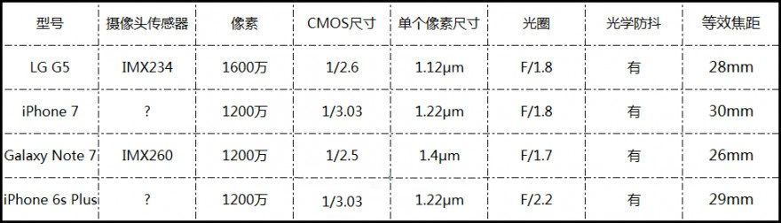
虽然受限于体积大小，智能手机无法使用体积庞大的传感器和镜头，
但它们依靠着强大的ISP、算法、先进感光技术，
让手机拍照一直不断进步至今。苹果虽然在6s Plus一代抛弃了800万像素的摄像头，
但实际上我们并没有在6s Plus上看到令人惊艳拍照表现，
它与同期的Galaxy Note 5系列有不小的差距。
这一次iPhone 7上使用了一颗全新的1200万像素摄像头，
而且也是第一次将光学防抖用于5英寸以下的苹果机型，
在开始评测之前我们也看过一些外媒的样张，
这让我们对新一代iPhone 7的拍照产生了极大的好奇。
这次的拍照横评我们选用了上一代的苹果机型iPhone 6s Plus、
三星现役最强拍照手机Galaxy Note7、
以变态解析力著称LG G5这三台具有代表性智能手机与iPhone 7进行比较。
备注：iPhone 7的后置摄像头拍摄的照片都为DCI-P3色彩标准，放在绝大多数显示设备上都无法正常显示其色彩，
因此测试当中，我们将所有iPhone 7的照片都转换成了sRGB的模式进行对比。
日间测试
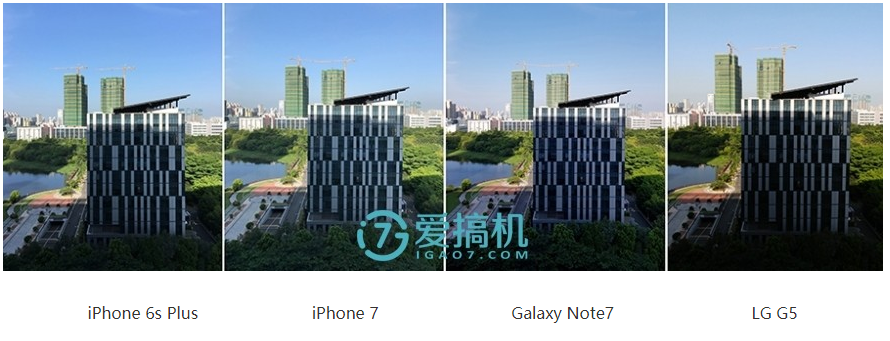
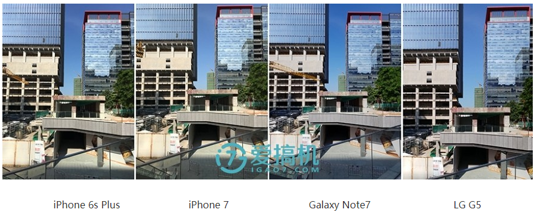
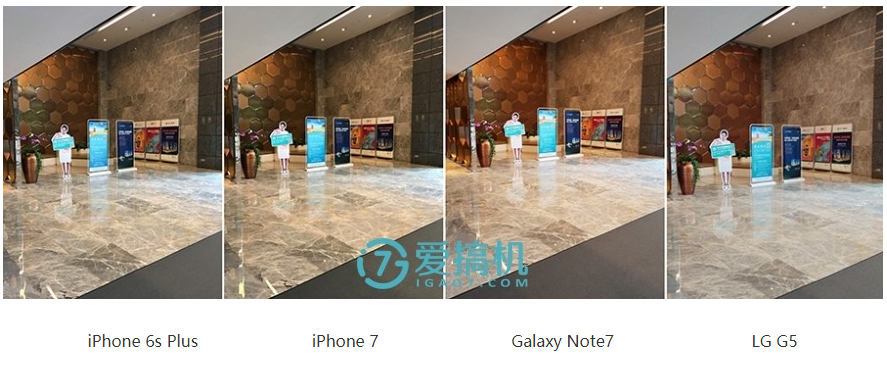
在日间场景中，由于光线充足，四台手机都不会因为弱光或噪点而丢失大量细节，
总体来说它们之间差距不会特别大。但我们注意到，在日间样张中，
LG G5的整体的画面色彩会有一点失真，它的白平衡表现没有其它三部机子那么正常。
夜间测试
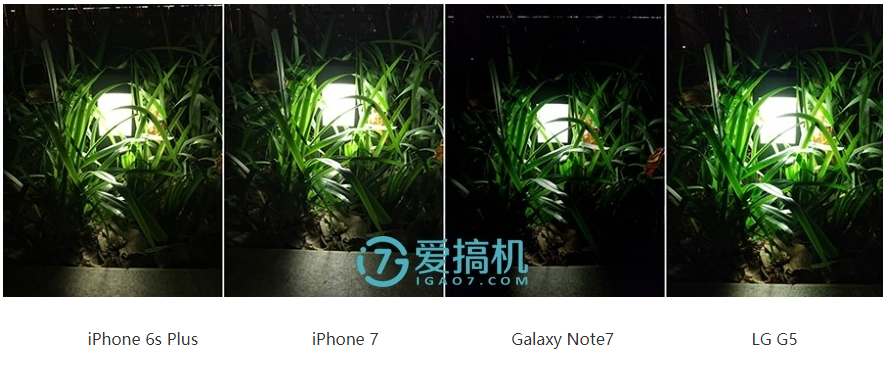
在多数夜间场景中iPhone 7的成像风格与iPhone 6s Plus相似，
在不放大样张看细节的情况下很难分别谁是6s Plus，谁是iPhone 7，
但放大仔细观察就会发现，iPhone 7会有意的提高暗部的曝光，以增加画面的细节，
同时会对暗部噪点进行涂抹处理，特别是在超弱光环境下，这种改变更加明显。
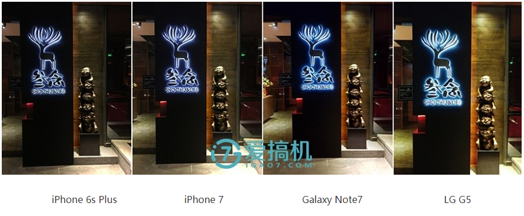
这组超弱光样张中，Galaxy Note7的解析力、纯净度、画面曝光都明显好于iPhone 7,
Galaxy Note7的画面纯净度、噪点控制、色彩还原都要好于iPhone 7。
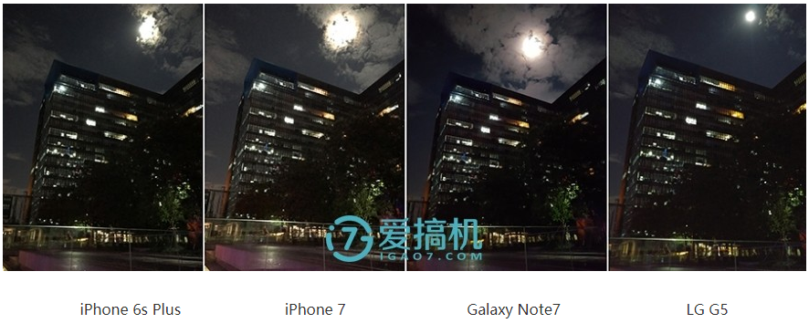
iPhone 7相对于iPhone 6s Plus而言在暗光、超弱光下有较大提升，
但是与Galaxy Note7相比还是稍有逊色，Note7胜在画面纯净度高，
噪点少，它的暗部噪点都进行大面积涂抹，而且画面曝光再高一小档，
但可能因为Note7积极的涂抹算法，导致它在部分场景中涂抹了该有的细节。
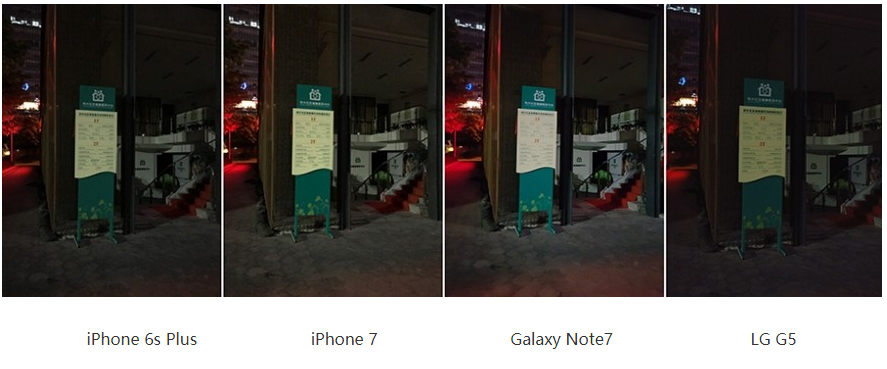
在这组弱光样张中，Galaxy Note7的字体细节有所丢失，
而LG G5的解析力简直强得和其它三台手机不在一个位面。
夜间拍照小结：由于夜间光线不佳，在超弱光下又容易产生大量噪点，
这十分考验手机的拍照算法，优秀的算法可以通过涂抹来降低噪点，
提升画面纯净度，这对于夜间成像整体的观感是十分简单粗暴的，
如果算法足够优秀，在此基础上还能够提升画面的解析力。
LG G5全方位的从曝光、细节、纯净度、噪点这几个方面完胜iPhone 7，
iPhone 7在夜景当中仅能在白平衡这一项上占一点优势，
Galaxy Note7也只有在画面纯净度上小胜LG G5。
这一代的iPhone 7在成像上的提升主要还是弱光方面，
不过夜景综合表现依然不如Note7，更不如LG G5，
但相比于上一代的提升还是值得我们肯定的。
使用体验
如果单论成像结果的话，LG G5会毫无疑问的夺取第一，
但是我们知道不管是手机拍照还是相机拍照，
拍照的使用体验也是十分影响用户消费的因素。
何为拍照使用体验？对焦、取景、操控这些都可以算是使用体验，
甚至在更早之前Wi-Fi SD卡没有的时候，
相机通过Wi-Fi传图到手机也是一项十分重要的使用体验。
对焦：对于一台手机来说，我们随身携带，很多时刻都是转瞬即逝，
能否做到快速对焦后的抓拍会对使用体验造成影响，
在四台手机当中，对焦速度最快的是采用了全像素双核AF传感器的Galaxy Note7，
对焦在取景的那一刻瞬间完成，完全感受不到对焦的存在。
iPhone 7的对焦也很快，但是如果极限对比还是会慢于Galaxy Note7，
而LG G5则会稍慢于iPhone 7，iPhone 6s Plus则是最慢的。
取景：可能很多人认为取景没什么讲的，
其实我们在真正使用手机拍照的时候会发现在一些高端智能手机上，
它们的取景非常的实时，取景画面与拍摄画面几乎是同步的，
如果取景稍延严重，那么同样会影响拍照的使用体验。正常情况下，
在日间光线充足的情况下，即便是千元机的取景也不会有高延迟，
而在弱光情况下情况就不一样了。弱光情况，
Galaxy Note7的取景是与拍摄画面同步率最高的，
几乎感觉不到延迟的存在的。iPhone在拍照体验方面做得一向不错，
iPhone 7/6s Plus弱光下的取景延迟较低，
LG G5则会感到明显的延迟，这是LG G5的一个弱点。
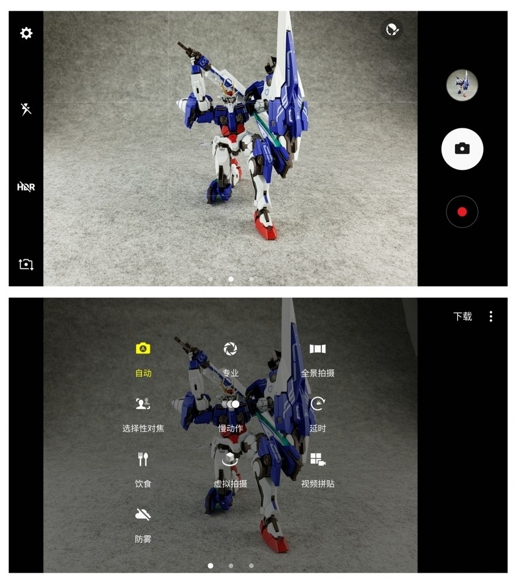
Galaxy Note7拍照界面
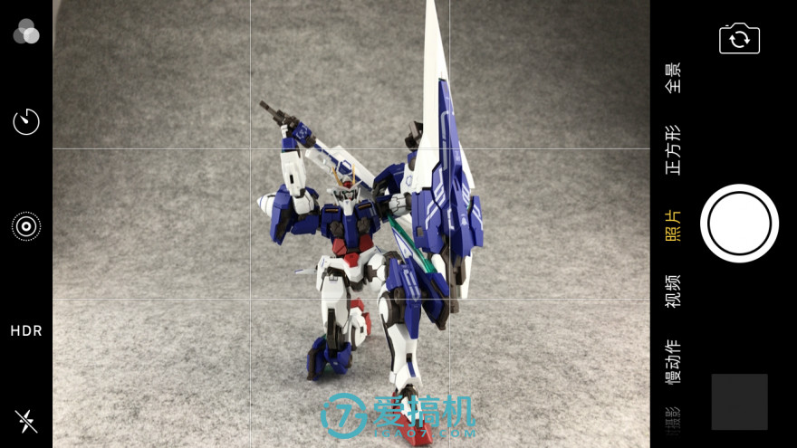
iPhone 7拍照界面
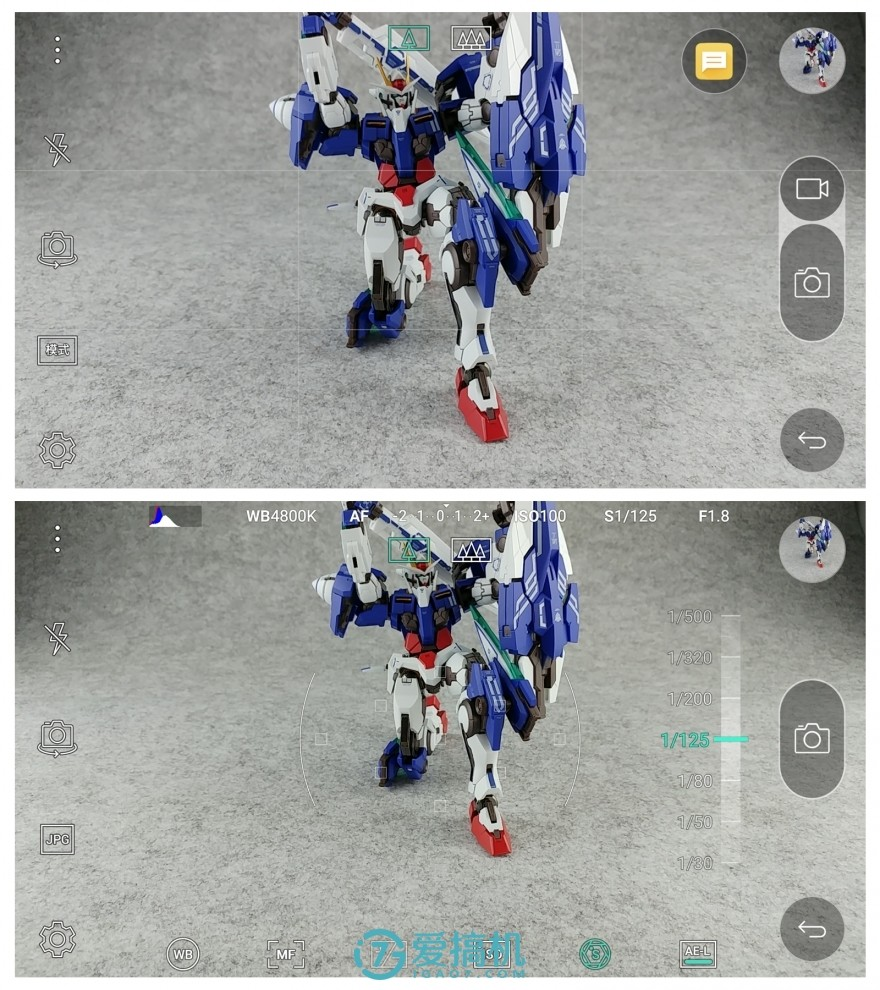
LG G5拍照界面
操控：其实手机对于拍照的操控要求并不高，因为手机不像相机一样有拨盘，
也不会经常用到手动档。iPhone 7的拍照界面基本与
iPhone 6s Plus一致，也是iPhone一贯的风格，
没有给用户太多的选项，也没有手动模式。
LG G5与Galaxy Note7都拥有比较强的手动模式，
不过Galaxy Note7在功能上会比LG G5更丰富。
补充：LG G5在某些弱光场景下，
它的快门响应速度（非快门时间）会明显慢于iPhone 7和Galaxy Note 7。
总结
曾有很多人对iPhone的拍照有误解，也有太多人神话了三星的拍照，
我们认为这iPhone 7、Galaxy Note7、
LG G5这三台手机都是处于目前智能手机拍照的第一阶梯，
只是三者有所侧重。
Galaxy Note7在夜间拥有优秀的涂抹、降噪算法，
在超弱光下也能保持很高的纯净度，同时对焦最快，但是会丢失一点细节，它的样张色彩浓艳，
讨人喜欢。Galaxy Note7十分适合弱光下的人像、
景物拍摄，但是拍字体那种需要强解析的时候表现稍弱。
LG G5的解析力可以实力压制所有正常范畴的智能手机（诺基亚808、松下CM1这两台除外），
弱光成像也非常强，弱光下的解析力实力秒杀Galaxy Note7、iPhone 7，
不过纯净度比Galaxy Note7稍差，它的样张色彩偶尔会出问题，
白平衡表现不如另外两部，而且取景延迟会影响实际拍照体验。
iPhone 7的白平衡和色彩表现无论是在日间也是夜间都是最稳定、
最准确的，但是由于它拍摄的照片都是DCI-P3标准的，
所以自己看的色彩和别人看到的会有一些偏差。
iPhone 7日间和夜间解析力都比Galaxy Note7强一点，
它的弱项在于夜间纯净度、噪点控制，采用了大光圈、
改良算法后的iPhone 7在夜景的表现明显好于6s Plus，
它对焦速度、取景速度仅次于Galaxy Note 7。
最后一点，iOS的微信客户端发朋友圈的照片最大分辨率为
1440*1080，而Android的是1280*960，
这也是iPhone的照片发朋友圈会更清一些的原因。
评论